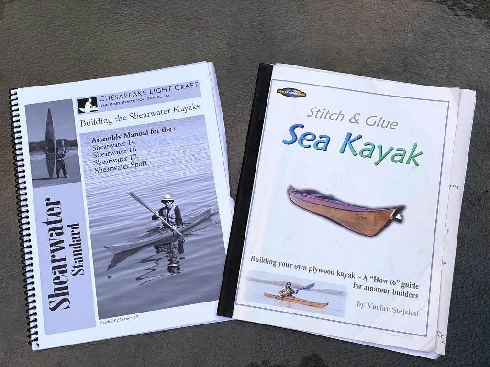
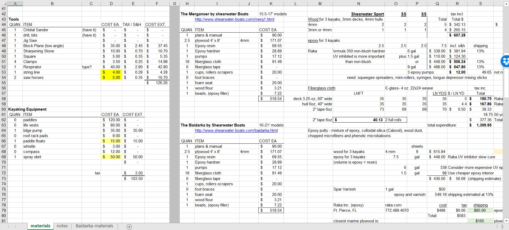
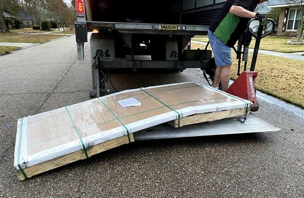
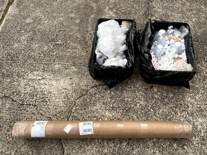

2. Sourcing Materials
It’s time to start the project by ordering plans and materials! I narrowed down my choices but still agonized over the final decisions.
A few years back I was “all-in” on the Stitch-n-glue Cirrus design by One Ocean Kayaks but the Shearwater Sport by Chesapeake Light Craft was also a contender. This is a little surprising because they are substantially different boats.
My family took a spring break trip to Washington DC in 2016 to visit family, enjoy the Yoshino cherries in full bloom, stroll the Mall, and we took a drive one day over to Annapolis. In addition to a bit of sightseeing at the harbor, we stopped at the CLC Boats “factory” and got a tour. It was really exciting to see their variety of boats in person. I looked closely at the Shearwater Sport and really liked the size. It is 1 1/2 feet shorter than the Cirrus and 3 1/2 inches wider. So, while it may not be as fast as the Cirrus, it will be more stable, the wider hatches may hold more gear, and overall it will be more practical to store and transport than the longer Cirrus. In the end, practicality won out so I ordered plans for CLC’s Shearwater Sport.

Sourcing Materials
With the kayak design set, I next turned my attention to sourcing materials. CLC’s build manual contained some specific information about materials which I didn’t previously have so I opened up my “kayak costs” spreadsheet and began updating the lists and quantities. I added columns for vendors and prices, breaking out shipping too. Marine plywood and epoxy are of course the heaviest and most expensive components of this project so I did a lot of searches and reading of forums seeking vendors close by. The central Gulf Coast has a history of boat building, but I found none of these supplies nearby. By calling around I found a speciality lumber dealer in Houston who carried Meranti, and another in New Orleans willing to order a pallet of Meranti. I considered it because it would save shipping cost. But, after further research about the plywoods, I learned Meranti tends to be stiffer than Okoume and a bit heavier, so is not quite as great for kayak construction although other builders have certainly used it with success. I decided to start my build with material I considered first rate: Joubert Okoume.

Trip or Ship?
I settled on suppliers located on Florida’s east coast: Raka epoxy in Ft. Pierce and World Panel near Palm Beach. (See a map in the gallery below.) I opted for Okoume plywood from World Panel because they had the best price, the largest selection, and shipping was less than from other sources I found in the New England states. Adding up the combined cost of shipping for plywood and epoxy, I considered making a trip from Louisiana to pick it all up in person. After factoring in lodging costs, tolls on the Florida Turnpike and “what if” vehicle breakdowns or weather problems, I realized the trip could quickly exceed the cost of shipping so I just ordered the materials. This decision had the benefit of getting things to me sooner. Both vendors were prompt with their packaging and shipment, and the items were received undamaged within a week. I was able to track the plywood, but the epoxy arrived before I had a chance to receive tracking information from Raka.
A special shout-out here to Mr. Chase Millar at World Panel Products. Chase seemed just as excited about my kayak building project as I was, and when he heard it was a father-son(s) project, he immediately offered a price discount. I’m grateful!

With World Panel I was able to purchase 4mm BS1088 Okoume marine plywood for the hull and 3mm for the deck which was precisely what I wanted. And while Raka epoxy doesn’t have the name recognition as West System 3, Raka does offer a quality product at a very competitive price. I bought 3/4 of my total epoxy volume with UV inhibitors for use on exterior surfaces, with the remaining volume lacking this additive, thus saving a few dollars. I’ll use the non-UV exclusively on interior surfaces. Vaclav at One Ocean performed a weathering test of various epoxy brands and Raka’s UV product outperformed all others. The products I ordered from Raka arrived via UPS in two boxes and the fiberglass cloth was in a tube as pictured below.

So, I’ve got the key ingredients of plywood and epoxy / fiberglass cloth. I’ve ordered a 100’ spool of copper wire from a vendor on Amazon. I picked up a few tools at my local Home Depot. So now what… Well, I have space problems in my workshop so I’ve had to dedicate two weekends to sorting, throwing out junk, and hauling items to a mini warehouse to make room for our project. More of this in the next post.
update - As I’m building in triplicate from a single set of plans I contacted CLC Boats about licensing fees. For personal use boats the royalty fee is half the value of the plan set. I made arrangements to pay CLC an additional $100 for use of their intellectual property - the design - for the two additional kayaks I’ll be building with my sons.
Gallery of Images
These thumbnails enlarge when you click them.